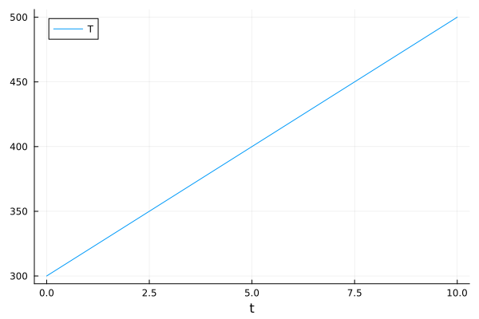
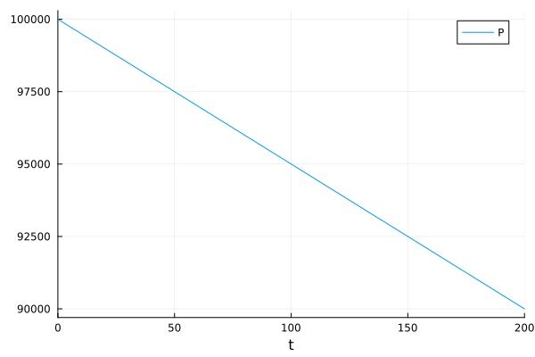
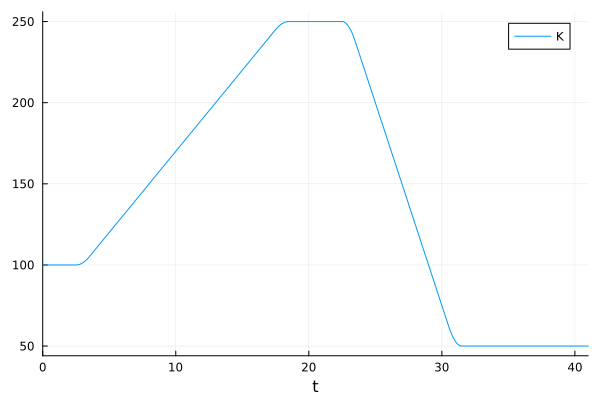

Arbitrary Simulation Conditions
Alongside the modular kinetic calculator interface, the ability to pass arbitrary combinations of simulation conditions through to be used in CRN integration is one of the key elements of extensibility and customisation within Kinetica.
By only requiring that conditions use consistent symbolic names at their definition and within a kinetic calculator, any variable condition profile, defined either directly or by its gradient with respect to time, can be symbolically bound to any quantity of interest.
ConditionSet
At the core of this system is the ConditionSet, which acts as an aggregator for individula condition profiles and their symbols. At their definition, ConditionSets take a dictionary of Symbol => Profile() mappings. Each Symbol can realistically be anything that Julia allows, but by convention (and for compatibility with most calculator implementations) we stick to the usual abbreviations for common conditions - :T for temperature, :P for pressure, :V for volume, etc. Each condition profile can be one of three options:
- A
Numberrepresenting a static value for the given condition to take for the duration of the simulation. Internally this is converted into aKinetica.StaticConditionProfile, but this is just a container for the number within. - A directly variable condition profile, e.g.
LinearDirectProfile. These are variable condition profiles where the condition is implemented directly as a function of time. - A gradient-variable condition profile, e.g.
LinearGradientProfile. These are variable condition profiles where the condition is implemented indirectly through its gradient with respect to time. These profiles must be numerically integrated (handled automtically within Kinetica) before they can be used.
The ConditionSet constructor takes an optional keyword argument, ts_update. If provided, this argument causes any kinetic simulations done with this ConditionSet to use the discrete rate update approximation, which is usually desired in any moderate to large-scale CRN simulations. For more information, see the tutorial on ODE Solution.
A ConditionSet which implements static simulation volume, linearly increasing temperature and linearly decreasing pressure with a rate constant update timestep of 1 ms could therefore look like the following:
conditions = ConditionSet(Dict(
:V => 1000.0,
:T => LinearDirectProfile(;
rate = 20.0,
X_start = 300.0,
X_end = 500.0
),
:P => LinearGradientProfile(;
rate = -50.0,
X_start = 1e5,
X_end = 9e4
)),
ts_update = tconvert(1.0, "ms", "s")
)ConditionSet{Float64}([:T, :P, :V], Kinetica.AbstractConditionProfile[LinearDirectProfile{Float64, Float64}(Kinetica.var"#f#12"{Float64, Float64, Float64, Float64, Float64}(20.0, 300.0, 500.0, 10.0), 20.0, 300.0, 500.0, 10.0, [0.0, 0.001, 0.002, 0.003, 0.004, 0.005, 0.006, 0.007, 0.008, 0.009 … 9.991, 9.992, 9.993, 9.994, 9.995, 9.996, 9.997, 9.998, 9.999, 10.0], nothing), LinearGradientProfile{Float64, Float64}(Kinetica.var"#grad#17"{Float64, Float64}(-50.0, 200.0), -50.0, 100000.0, 90000.0, 200.0, [0.0, 0.001, 0.002, 0.003, 0.004, 0.005, 0.006, 0.007, 0.008, 0.009 … 199.991, 199.992, 199.993, 199.994, 199.995, 199.996, 199.997, 199.998, 199.999, 200.0], nothing), Kinetica.StaticConditionProfile{Float64}(1000.0)], true, 0.001)By default, Kinetica works in units of seconds (this can be changed within the kinetic calculator being used). While the conversion above may be a bit redundant, the tconvert function can be used to quickly convert between commonly used time units.
The behaviour of the ts_update argument is subject to change in the near future. This will likely not be a dramatic change, but it may be worth bearing in mind.
Useful Functions
Once constructed, ConditionSets can be queried in a number of ways. To fetch any of the profiles within, get_profile can be called:
get_profile(conditions, :T)LinearDirectProfile{Float64, Float64}(Kinetica.var"#f#12"{Float64, Float64, Float64, Float64, Float64}(20.0, 300.0, 500.0, 10.0), 20.0, 300.0, 500.0, 10.0, [0.0, 0.001, 0.002, 0.003, 0.004, 0.005, 0.006, 0.007, 0.008, 0.009 … 9.991, 9.992, 9.993, 9.994, 9.995, 9.996, 9.997, 9.998, 9.999, 10.0], nothing)To test if a given condition is static or variable, the isstatic and isvariable funcitons can be called:
println("Temperature profile is static: $(isstatic(conditions, :T))")
println("Pressure profile is variable: $(isvariable(conditions, :P))")Temperature profile is static: false
Pressure profile is variable: trueTo get the final time at which all condition profiles have stopped varying, get_t_final can be called. This returns the maximum value of each condition profile's t_end attribute (see below):
get_t_final(conditions)200.0Condition Profile Showcase
Below are the currently implemented variable condition profiles, along with examples of their shapes. Condition profiles are being added as we need them, so this library is currently quite small. You can help us out by adding new profiles and submitting a pull request (see the Development section on Condition Profiles), or by requesting them to be added on our Issues page!
Directly Variable Condition Profiles
LinearDirectProfile
This profile represents a linear change from one value to another. It has a piecewise linear condition function, defined as follows for the arbitrary condition $X$:
\[X\left( t \right) = \begin{cases} \texttt{X\_start}, & \text{if } t \leq 0.0 \\ \texttt{X\_start} + t\left( \texttt{rate} \right), & \text{if } t > 0.0 \text{ and } t \leq t_{\text{end}} \\ \texttt{X\_end}, & \text{if } t > t_{\text{end}} \\ \end{cases}\]
where $t_{\text{end}} = \left( \texttt{X\_end} - \texttt{X\_start} \right) / \texttt{rate}$. For example:
cs = ConditionSet(Dict(
:T => LinearDirectProfile(;
X_start = 300.0,
X_end = 500.0,
rate=20.0)
))
Gradient-Variable Condition Profiles
LinearGradientProfile
The gradient-based implementation of LinearDirectProfile. Either can be used, they should be equally accurate. Mostly serves as an example of how gradient profiles differ in implementation to their directly variable counterparts. It has a piecewise linear gradient function, defined as follows for the arbitrary condition $X$:
\[\frac{\mathrm{d} X\left( t \right)}{\mathrm{d}t} = \begin{cases} 0.0, & \text{if } t \leq 0.0 \\ \texttt{rate}, & \text{if } t > 0.0 \text{ and } t \leq t_{\text{end}} \\ 0.0, & \text{if } t > t_{\text{end}} \\ \end{cases}\]
where $t_{\text{end}} = \left( \texttt{X\_end} - \texttt{X\_start} \right) / \texttt{rate}$. For example:
cs = ConditionSet(Dict(
:P => LinearGradientProfile(;
X_start = 1e5,
X_end = 9e4,
rate=-50.0)
))
DoubleRampGradientProfile
This profile represents two linear condition ramps, each of which can have either a positive or a negative gradient, separated by a plateau of variable time. The profile also begins and ends with variable-length condition plateaus to enable equilibration at the initial and final values. It has a piecewise linear gradient function, defined as follows for the arbitrary condition $X$:
\[\frac{\mathrm{d} X\left( t \right)}{\mathrm{d}t} = \begin{cases} 0.0, & \text{if } t < t_{r1, \text{start}} \\ \texttt{rate1}, & \text{if } t_{r1, \text{start}} \leq t < t_{r1, \text{end}} \\ 0.0, & \text{if } t_{r1, \text{end}} \leq t < t_{r2, \text{start}} \\ \texttt{rate2}, & \text{if } t_{r2, \text{start}} \leq t < t_{r2, \text{end}} \\ 0.0, & \text{if } t \geq t_{r2, \text{end}} \end{cases}\]
where $\texttt{rate1}$ and $\texttt{rate2}$ are the rates of change of the two linear ramps, and $t_{r1, \text{start}}$, $t_{r1, \text{end}}$, $t_{r2, \text{start}}$ and $t_{r2, \text{end}}$ are the respective start- and end-times of the first and second ramps, determined by the lengths of the starting, middle and ending plateaus.
The profile features an optional argument t_blend, which can be used to create smooth transitions between the otherwise discontinuous gradient changes through linear interpolation. For example:
cs = ConditionSet(Dict(
:K => DoubleRampGradientProfile(;
X_start = 100.0,
t_start_plateau = 3.0,
rate1 = 10.0,
X_mid = 250.0,
t_mid_plateau = 5.0,
rate2 = -25.0,
X_end = 50.0,
t_end_plateau = 10.0,
t_blend = 0.5)
))